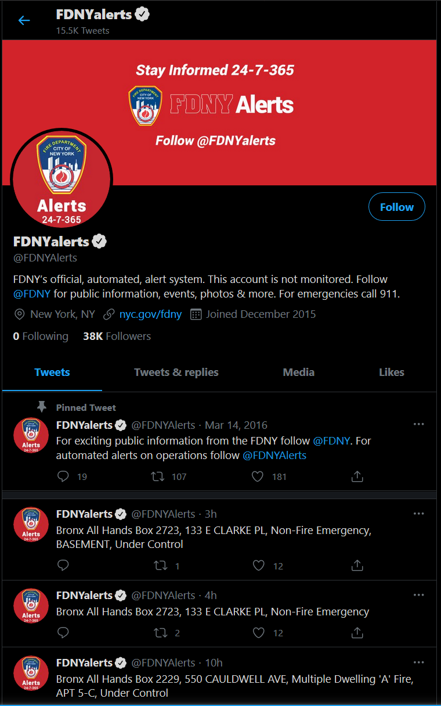
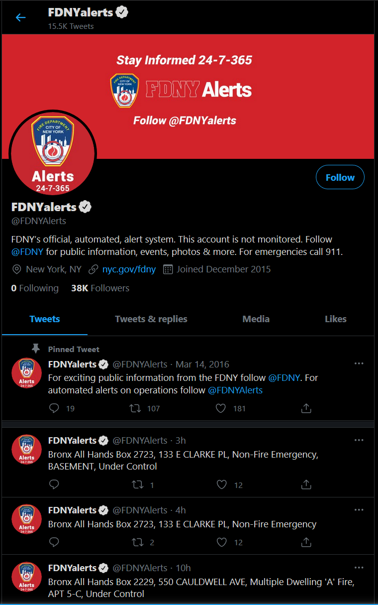

About
Shahzeb Rizvi (me):
I am currently an ungraduate student majoring in computer science at the City College of New York. I am in my senior year and am expected to graduate Fall 2021. I am also interning at the Department of Education on the Cyber Security Team. I am looking in to getting more experience in the software engineering field and the Cyber Security field to decide which one is right for me.
Skills:
Back End Development
Back end Development refers to the server side of development where you are primarily focused on how the site works I have devloped multiple projects as a back end developer. Most times I have been responsible for architecting the entire system of how the back end server communicates with the database and the front end.
Front End Development
Front End Development is building out the visual components of a website. Using HTML, CSS , and Javascript, I build fast, interactive websites. I am familiar with multiple Front End framworks such as angular, react, ionic and PHP
Cloud Deployment
Cloud Deployment is making your website/application public. I can make that happen while making the site more secure and reliable. Leveraging CI/CD tools we can also streamline development of the project and have deployed in a single pipeline.
Work Experience
Engineering Intern • NYC Department of Education IPDVS • July 2018 - Present
• Provide remote support of all IPDVS cameras and general network connectivity components to the SCA's deployment engineers, vendors, and integrators • Performed 100+ assessments of IPDVS sites, examining the server’s hardware and software, MDF/IDF environment, camera installations and viewer configurations • Developing multiple scripts that filter, sort, and output critical information as CSV files for all IPDVS schools and cameras using PHP, MySQL, and PowerShell. • Automated the installation of Windows Server 2016 by writing multiple PowerShell and Batch scripts which image the selected drive, set up RAID, preset settings for the windows configuration and install required IPDVS software such as SQL Server 2016 and LSA LSI Storage software.
Electronic Technician • Self-Employed • Jun. 2013 - Present
• Provide remote support of all IPDVS cameras and general network connectivity components to the SCA's deployment engineers, vendors, and integrators • Performed 100+ assessments of IPDVS sites, examining the server’s hardware and software, MDF/IDF environment, camera installations and viewer configurations • Developing multiple scripts that filter, sort, and output critical information as CSV files for all IPDVS schools and cameras using PHP, MySQL, and PowerShell. • Automated the installation of Windows Server 2016 by writing multiple PowerShell and Batch scripts which image the selected drive, set up RAID, preset settings for the windows configuration and install required IPDVS software such as SQL Server 2016 and LSA LSI Storage software.
Projects
Data Viz Hackathon - Best Visuals Winner • February 2020
• Cooperated with a team of 8 to make FDNY data publicly available online for the first time in history by scraping official tweets on Twitter
from the FDNY which tweets alerts about current fires in NYC
• Cleaned and filtered the scraped data making it ready to be cross-referenced with an open database of all addresses in NYC by correlating the longitude and latitude using Pandas which was necessary for the geocoding of each FDNY incident to be displayed on a visual map using kepler.gl
 

TeamUp - Software Engineering Project • May 2020
• Led a team to develop a Web-App using Django framework which facilitates active teaming of people with similar interests and skillsets to forge groups for a certain do-good project • Implemented many features including: - Homepage that provides a different GUI for different types of Users - User compliment and complaint system - Super User control center for handling user complaints and taking various actions such as sending emails, suspending users and deleting accounts from the database
PhotoNimbus - Cloud Photo Storage/Sharing App • October 2020
• Cooperated with a team of 3 to build a production-ready photo storage and sharing application on Google Cloud which is both reliable and secure • Implemented the User Authentication, User Model, Login API, Registration API, hosted in multiple regions, prober testing, CI/CD pipeline, CSRF and SSRF protection, KMS protected DB, and Security Command Center